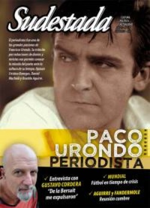

Buscar
Paco Urondo. Crónicas de un periodista apasionado
Junto a la poesía y la política, el periodismo fue una de las grandes pasiones de Francisco Paco Urondo. Con la excusa de la reciente publicación de todos sus trabajos como cronista entre 1952 y1972, recorremos el tránsito de Paco por las redacciones de diarios y revistas, su mirada sobre la cultura de su tiempo y los bordes de su narrativa, entonces vinculada a un oficio como herramienta transformadora. Opinan Cristina Banegas, Daniel Muchnik y Osvaldo Aguirre.
Edición N° 129
Junio 2014
Revista bimensual
Comprar edición impresaSumario
- Paco Urondo. Crónicas de un periodista apasionado
- Un oficio terrestre
- El caso Padura
- Gustavo Cordera: "De la Bersuit me expulsaron"
- Fandermole y Aguirre. "La producción independiente abrió el ejercicio de lo colectivo"
- Laika. Un ladrido en el cosmos
- Mundial de Brasil. Identidad se busca
- Elvio Romero. "Tendrás tu tiempo"
- Incendios en Valparaíso: Rastros del fuego
- El maravilloso mundo de Silvalandia
Compartir Articulo
La publicación de un libro trae aparejado un mecanismo que combina un fenómeno cultural con la acción publicitaria, que busca una presencia en los medios y la venta en librerías. Ahora, ¿esto se repite con todos y cada uno? Hay trabajos que por sus características rompen el molde, se transforman en testimonio de una época y trascienden el ámbito de la industria. Y otros que son verdaderos hallazgos, la perla en medio del océano, la moneda que encontramos en la vereda para llegar al pan nuestro de cada día. De eso se trata Obra periodística, un volumen que recopila una parte de los artículos escritos por Francisco Reynaldo Urondo, entre 1952 y 1972, para revistas y diarios argentinos.
¿Cómo poner en el centro las notas de Paco Urondo y eludir la tentación de abordar sus años de militancia y el final trágico en la provincia de Mendoza? El personaje y su historia son tan cautivantes que el propósito resulta difícil y contradictorio. Pero la aparición de un libro siempre allana el camino: la editorial Adriana Hidalgo editó sus cuentos, poesías y textos periodísticos; así dio otra visibilidad a su producción intelectual, un lugar de privilegio para que las nuevas generaciones la conozcan. Urondo fue un hombre que vivió de manera intensa y que ejerció el oficio de periodista en un tiempo donde escribir significaba mucho más que completar una cantidad de palabras para cumplir con la pauta.
Obra periodística es un volumen de 592 páginas, producto de la investigación, selección y notas de Osvaldo Aguirre, que recopiló una parte de los artículos publicados en Trimestral, Tiempo de América, Che, Leoplán, La Hipotenusa, Todo es Historia, Cuadernos Hispanoamericanos, Todo para interpretar la realidad argentina y mundial, El diario (Mendoza), La Opinión, Damas y damitas, Adán y Panorama. Veinte años que incluyen artículos "de color" (que significaban el derecho de piso del iniciado), perfiles, entrevistas y el análisis sobre fenómenos culturales que le daban pie para avanzar hacia el terreno político y social.
El recorrido de Urondo por la prensa se completa con revistas como Crisis y Juan y el diario Noticias, donde ejerció como secretario general de redacción y responsable político ante Montoneros. En el matutino compartió el trabajo con Miguel Bonasso, director; Horacio Verbitsky, editor de Política y Juan Gelman, jefe de redacción.
Paco formó parte de una época clave, porque en la década del sesenta hubo publicaciones que cambiaron un estilo periodístico gris y sombrío por uno reflexivo y de opinión, que sellaron a fuego publicaciones como Panorama y La Opinión. Además, las redacciones combinaban hombres del oficio con intelectuales que se ganaban la vida en ese ámbito. Dueño de una simpatía arrolladora, supo hacer amigos y es recordado como alguien que se preocupaba por sus compañeros de trabajo, muy alejado del escritor y poeta que se siente en el Olimpo de la cultura...
(La nota completa en la edición gráfica)
Comentarios
Marcelo Massarino
Articulos más vistos


LIBRERÍA SUDESTADA

Colección infantil

Distribuidora de Libros

Suscripción

Sudestada en URUGUAY

Otros articulos de esta edición
Gustavo Cordera: "De la Bersuit me expulsaron"
Durante veinte años fue voz y líder de una de las bandas más prolíficas y convocantes de nuestro país. Hoy, ...
 Plástica
Plástica
El maravilloso mundo de Silvalandia
El artista argentino Julio Silva recibió a Sudestada en su departamento en el barrio de Montparnasse, en París. Es dibujante, ...
El caso Padura
Al menos desproporcionadas sonaron algunas críticas recibidas por el escritor cubano Leonardo Padura, de visita por Buenos Aires.
 Musiqueros
Musiqueros
Fandermole y Aguirre. "La producción independiente abrió el ejercicio de lo colectivo"
Hace años que el cantautor santafesino Jorge Fandermole y el pianista y compositor entrerriano Carlos Negro Aguirre son considerados autores ...